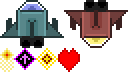

HaxePunk is a game framework, so the best way to learn its features is by making a game.
In this tutorial series I'll be making a simple vertical shooter game. Today we'll cover packing textures into atlases for hardware rendering, as well as movement of our space ship.
If you haven't installed HaxePunk yet, do so by following this tutorial.
Texture packing is not a new concept, I previously explained it in my tile based game creation tutorial.
Basically, texture packing is taking multiple graphics resources and stuffing them onto one image, which can then be fed to the GPU and sliced up in regions, which are then used as separate graphics. This concept exists it most platforms that are used for game development.
The resulting image is called an atlas, or, in some cases, a spritesheet or tileset. You can create this image yourself, or use a software like TexturePacker, which creates an atlas and an xml file from provided graphics. The xml file is used to define the regions.
Create a new HaxePunk project, and edit the project.xml file right away.
In this case I disabled window resizing, changed the background color, and, most importantly, I added an asset path to the assets/atlas directory.
<?xml version="1.0" encoding="utf-8"?>
<project>
<meta title="HaxePunk Shooter" package="com.example.app" version="1.0.0" company="" />
<app file="Main2" main="Main" path="bin" />
<window fps="30" background="0x19263a" />
<window width="640" height="480" resizable="false" unless="mobile" />
<window fullscreen="true" if="mobile" />
<window orientation="landscape" vsync="true" antialiasing="0" if="cpp" />
<source path="src" />
<haxelib name="openfl" />
<haxelib name="openfl-bitfive" if="html5" />
<haxelib name="HaxePunk" />
<assets path="assets/graphics" rename="graphics" include="*.png|*.jpg" />
<assets path="assets/audio" rename="audio" include="*.mp3" if="flash" />
<assets path="assets/audio" rename="audio" include="*.wav|*.ogg" unless="flash" />
<assets path="assets/font" rename="font" include="*.ttf" />
<assets path="assets/atlas" rename="atlas" include="*.xml" />
<icon path="assets/HaxePunk.svg" />
</project>Let's add the assets now. Firstly we'll add the atlas with all the graphics packed in it. Here's one I made:
Now create an assets/atlas/ directory and place an atlas.xml file in it. This is where we will define the regions of the atlas which represent different graphics. Once again, if you use a program like TexturePacker, this xml will be generated automatically, but you can write it yourself, as long as it looks like this:
<?xml version="1.0" encoding="UTF-8"?>
<TextureAtlas imagePath="graphics/graphics.png" width="128" height="72">
<sprite n="playerShip" x="0" y="0" w="64" h="48"/>
<sprite n="enemyShip" x="64" y="0" w="64" h="48"/>
<sprite n="bullet" x="0" y="48" w="14" h="24"/>
<sprite n="powerup" x="14" y="48" w="22" h="24"/>
<sprite n="explosion" x="36" y="48" w="22" h="24"/>
<sprite n="heart" x="58" y="48" w="22" h="24"/>
</TextureAtlas>Now we have an atlas graphic and an atlas xml file.
Let's make a moveable player ship entity, which will use the first graphic from the atlas.
Create a new PlayerShip class. Here's the code:
package ;
import com.haxepunk.Entity;
import com.haxepunk.graphics.atlas.AtlasRegion;
import com.haxepunk.HXP;
import com.haxepunk.utils.Input;
import com.haxepunk.utils.Key;
/**
* Player ship.
* @author Kirill Poletaev
*/
class PlayerShip extends Entity
{
private var movespeed:Int;
public function new(g:Dynamic)
{
super();
graphic = g;
movespeed = 8;
width = 64;
height = 48;
x = HXP.width/2 - width/2;
y = HXP.height - 80;
}
override public function update() {
if (Input.check("down")) {
moveBy(0, movespeed);
}
if (Input.check("up")) {
moveBy(0, -movespeed);
}
if (Input.check("right")) {
moveBy(movespeed, 0);
}
if (Input.check("left")) {
moveBy(-movespeed, 0);
}
if (this.x < 0) this.x = 0;
if (this.y < 0) this.y = 0;
if (this.x > HXP.width - width) this.x = HXP.width - width;
if (this.y > HXP.height - height) this.y = HXP.height - height;
}
}You can see that the constructor receives a graphic object as a parameter, and sets it as the graphic of the Entity. This means that we'll have to pass the ship graphic here later.
I use the HXP class' properties to center the spawned ship in the center of the bottom of the screen.
The update() function has movement logic, which checks for inputs using the Input class. Notice what values I pass to the check() methods - string values like "up" are not valid key identifiers by default. However, they are usable in this case because these strings do not represent actual keys, but key groups, which are declared earlier.
By earlier, I mean the MainScene class. Here's the full code to it:
import com.haxepunk.graphics.atlas.TextureAtlas;
import com.haxepunk.graphics.Image;
import com.haxepunk.HXP;
import com.haxepunk.Scene;
import com.haxepunk.utils.Input;
import com.haxepunk.utils.Key;
class MainScene extends Scene
{
private var player:PlayerShip;
public function new()
{
super();
Input.define("up", [Key.UP, Key.W]);
Input.define("down", [Key.DOWN, Key.S]);
Input.define("left", [Key.LEFT, Key.A]);
Input.define("right", [Key.RIGHT, Key.D]);
var atlas:TextureAtlas = TextureAtlas.loadTexturePacker("atlas/atlas.xml");
player = new PlayerShip(new Image(atlas.getRegion("playerShip")));
add(player);
}
}You can see that in the beginning of the code I define 4 key groups, identified by string values like "up" and "left". These key groups, in this case, each consist of 2 keys.
Using this configuration, we can control our ship using WASD or the arrow keys.
Next, I declare a TextureAtlas object. The object is instantiated using a static method called loadTexturePacker(), which parses our atlas xml file.
When the PlayerShip instance is created, I create an Image object out of the "playerShip" region in the atlas, and pass it as the constructor parameter.
As a result, when you debug the game, you'll have something that looks like this:

In the next part, we'll add shooting functionality to our game.